| Parameter | Mand | Type | Default | Constraints |
| spectrumset | yes | dataset | spectrum.ds | none |
Name of input spectrum dataset.
|
| arfset | no | dataset | ancillaryfile.ds | none |
Name of output ancillary response dataset.
|
| withrmfset | no | boolean | false | none |
If set, the ARF energy grid is defined by the RMF dataset
specified by rmfset.
|
| rmfset | no | dataset | responsefile.ds | none |
Name of input response dataset. Used only if
withrmfset is set to true.
|
| detmaptype | no | choice | flat | dataset flat psf |
The origin of the detector map: if set to dataset,
then the user must specify the name of that dataset,
and the table name of the map though detmaparray.
If it is set to flat or psf, then the parameters detxoffset, detyoffset, detxbins and detybins
define the detector map grid. In addition, psfenergy
needs also to be set if detmaptype  psf. psf.
|
| detmaparray | no | array | detmapfile.ds: | none |
Name of detector map dataset and array in the DAL compound notation.
Only used of detmaptype is set to dataset.
|
| withdetbounds | no | boolean | false | none |
For psf or flat detector maps.
If true
then the bounds of the internal detector map are taken from
the parameters detxoffset and detyoffset.
Otherwise, the bounds are taken from the DSS information
in the spectrum dataset.
|
| detxoffset | no | real | 1200 |
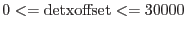 |
Used if detmaptype is set to psf or flat.
This defines the half-width of
the detector map in DET coordinates.
For example, if the source x-coordinate is  ,
the x-bounds are [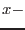detxoffset,
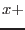detxoffset]. ,
the x-bounds are [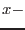detxoffset,
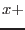detxoffset].
|
| detyoffset | no | real | 1200 |
 |
Used if detmaptype is set to psf or flat.
This defines the half-height of
the detector map in DET coordinates.
For example, if the source y-coordinate is  ,
the y-bounds are [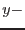detyoffset,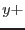detyoffset]. ,
the y-bounds are [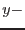detyoffset,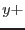detyoffset].
|
| withdetbins | no | boolean | false | none |
For psf or flat detector maps.
If true
then the number of bins of the internal detector map are taken from
the parameters detxbins and detybins.
Otherwise, the number of bins are calculated automatically.
|
| detxbins | no | integer | 5 | 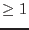 |
Used if detmaptype is set to psf or flat.
This is the number of bins along the x-axis of the map.
|
| detybins | no | integer | 5 | |
Used if detmaptype is set to psf or flat.
This is the number of bins along the y-axis of the map.
|
| psfenergy | no | real | 2.0 |
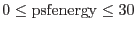 |
Used if detmaptype is set to psf.
This is the energy, in keV, at which the PSF model
used to construct the detector map is taken.
|
| filterdss | no | boolean | true | none |
If true, the raw detector map and the bad pixel lists
are filtered using the DSS information
stored in the spectrum dataset. If false,
every pixel in the raw detector map
is propagated to the filtered map and every bad pixel is used in
the area calculation. This is a debugging parameter and should not
be set to false under normal conditions.
|
| withfilteredset | no | boolean | false | none |
If true, the filtered detector map
is written out to a permanent dataset, the
name of which is taken from the parameter
filteredset.
|
| filteredset | no | dataset | filteredpixellist.ds | none |
Name of output filtered detector map. Used only if
withfilteredset is set to true.
|
| withsourcepos | no | boolean | false | none |
If true, the source position must be
specified via the parameters sourcecoords,
sourcex, sourcey. Otherwise,
the source position is taken from the
centre of the source region defined in the data subspace
of the input spectrum.
|
| sourcecoords | no | choice | eqpos | eqpos pos tel det |
Used if withsourcepos true.
The coordinate system for which the source position, specified
by the parameter sourcex and sourcey, is defined.
If sourcecoords is set to eqpos, then sourcex, sourcey
correspond to RA and DEC respectively in decimal degrees.
If sourcecoords pos, then sourcex, sourcey correspond
to POS coordinates.
(Note that the POS coordinates are defined relative to a norminal pointing position;
this is taken from the global attributes REFXCRVL and REFYCRVL of
the spectrum dataset.)
If sourcecoords tel, then sourcex, sourcey correspond to the telescope coordinates theta (arcseconds) and phi (radians).
If sourcecoords det, then sourcex, sourcey are
the x and y positions of the source centre, in DET coordinates.
|
| sourcex | no | real | | none |
(Used if withsourcepos true)
The x-position of source centre,
in terms of the coordinate system specified in sourcecoords.
|
| sourcey | no | real | | none |
(Used if withsourcepos true)
The y-position of source centre,
in terms of the coordinate system specified in sourcecoords.
|
| extendedsource | no | boolean | false | none |
Informs arfgen
as to whether the source is extended
or point-like. This is currently only used for the
encircled energy correction.
|
| useodfatt | no | boolean | false | none |
whether the full attitude file should be used from the
OAL. If this is set to false then attitude is taken from the
mean pointing position in the spectrum header.
|
| withbadpixcorr | no | boolean | true | none |
states whether CCD gap and bad pixel corrections
are wanted.
|
| badpixlocation | no | dataset | "notSpecified" | none |
The name of the file containing the bad pixel locations.
Usually, this will be the event file from which the
spectral dataset was constructed.
|
| badpixelresolution | no | real | 0.5 | none |
This is the resolution that the program uses to calculate the
encircled energy correction and to search for
pixels which are outside the field-of-view or off the edge of
the CCDs. If the extendedsource parameter is set true
then this value is defaulted to 2.0 arcseconds. Reducing the number,
in this case, to 1.0 arcseconds will improve
the accuracy of the calculation at the expense of execution time.
|
| ignoreoutoffov | no | boolean | yes | |
Whether area outside the field of view should be excluded
in the arfgen calculation.
|
| modeleffarea | no | boolean | true | none |
If true, the effective area data from the CAL is taken into consideration
when generating the ARF.
|
| modelquantumeff | no | boolean | true | none |
If true, the quantum efficiency data from the CAL is taken into consideration
when generating the ARF.
|
| modelfiltertrans | no | boolean | true | none |
If true, the filter transmission data from the CAL is taken into consideration
when generating the ARF.
|
| modelee | no | boolean | true | none |
If it is point-like
(extendedsource=false), a model of the PSF positioned
at a point specified by sourcex
and sourcey is generated, and the fraction of
the model situated within the region defined by
the DSS information is computed.
There is currently no encircled energy correction
implementation for extended sources.
|
| psfmodel | no | string | ELLBETA | ELLBETA,EXTENDED,HIGH |
The point spread function (PSF) model to use when calculating
the encircled energy correction.
|
| modelootcorr | no | boolean | true | none |
The ARF will be decreased by a mode-dependent percentage
if modelootcorr=true and if the pipeline version
used to create the spectrum is older than 18 June 2001.
|
| eegridfactor | no | integer | 50 |  |
Used if modelee is set to true.
This is the factor which to oversample
the ARF energy grid in order to perform
the energy correction efficiently:
The larger the factor,
the faster the execution time, but the less
accurate the correction.
|
| setbackscale | no | boolean | false | none |
states whether the BACKSCAL value in the input
spectrum should be set to the calculated source region
area.
|
| keeparfset | no | boolean | true | none |
whether the calculated ARF file should be kept or deleted.
This option is included for the benefit of the backscale
metatask which sets the BACKSCAL value in the input spectrum.
|
| crossregionarf | yes | boolean | false | none |
whether across-region ARF should be calculated.
|
| crossreg_spectrumset | yes | dataset | | none |
Name of spectrum containing the input region.
|
| Parameter | Mand | Type | Default | Constraints |